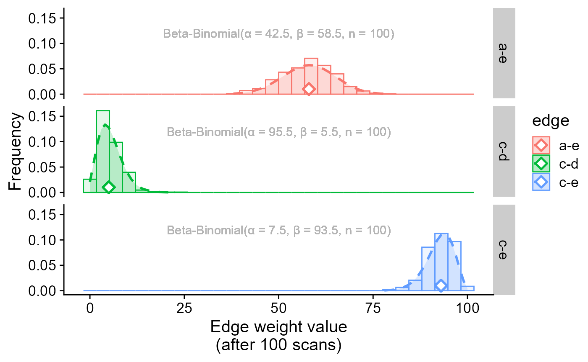
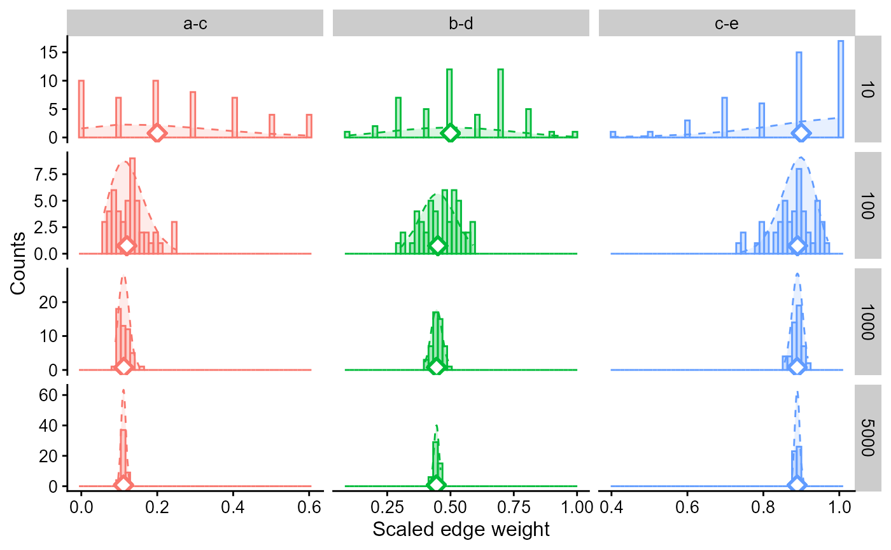
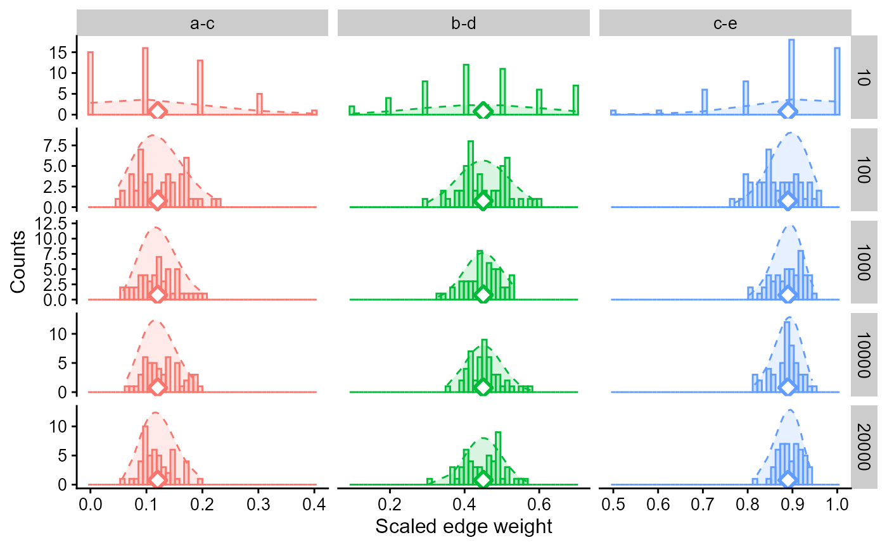
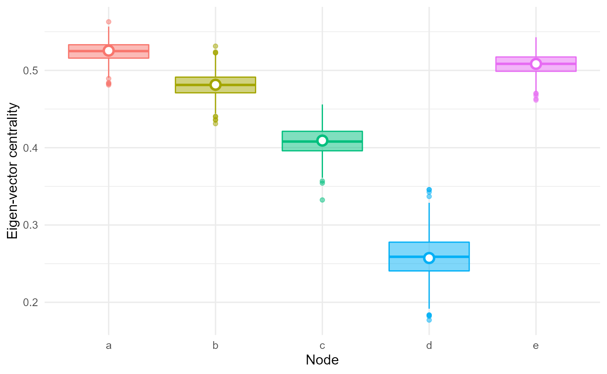
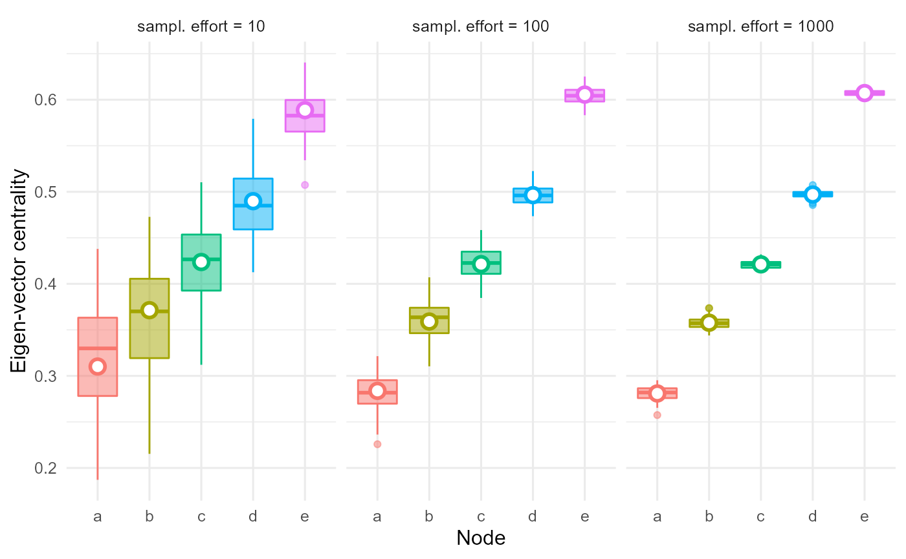

SimuNet
vignettes/articles/uncertainty.Rmd
uncertainty.RmdSimuNet’s simulation process can be assimilated to a network constructed via Bayesian inference over the network’s edges. Through repeated Bayesian-inferred simulations, one can assess a network uncertainty by determining the distributions of simulated network metrics.
By replicating many simulations, one can assess a distribution of edges’ weights:
library(SimuNet)
library(reshape2)
library(dplyr)
#>
#> Attaching package: 'dplyr'
#> The following objects are masked from 'package:stats':
#>
#> filter, lag
#> The following objects are masked from 'package:base':
#>
#> intersect, setdiff, setequal, union
library(ggplot2)
library(cowplot)
library(extraDistr)
set.seed(42)
n <- 5L
samp.effort <- 100L
Adj <- sample(1:samp.effort,n * n) |>
matrix(nrow = n,dimnames = list(letters[1:n],letters[1:n]))
Adj[lower.tri(Adj,diag = TRUE)] <- 0L
Adj
#> a b c d e
#> a 0 100 37 27 58
#> b 0 0 20 36 42
#> c 0 0 0 5 93
#> d 0 0 0 0 30
#> e 0 0 0 0 0
# Running a single simulation
sL <- simunet(Adj,samp.effort,"upper",100)
sL |> sum_scans()
#>
#> Weighted adjacency matrix
#> a . 99 38 30 64
#> b . . 20 36 39
#> c . . . 5 92
#> d . . . . 22
#> e . . . . .
#>
#>
#> Hidden attributes:
#> scanList.type - raw.scanList - Adj - samp.effort - n.scans - mode
#> Adj.subfun - edge.Prob - summed.scanList - sampled
# Replicating many simulations
sL.list <- replicate(n = 1000,simunet(Adj,samp.effort,"upper",100) |> sum_scans())
edge.weights <-
melt(sL.list,varnames = c("i","j","rep"),value.name = "weight") |>
subset(as.numeric(i) < as.numeric(j)) |>
mutate(ij = paste0(i,"-",j))
head(edge.weights)
#> i j rep weight ij
#> 6 a b 1 100 a-b
#> 11 a c 1 21 a-c
#> 12 b c 1 27 b-c
#> 16 a d 1 33 a-d
#> 17 b d 1 35 b-d
#> 18 c d 1 2 c-dThese are for instance the distributions of three edge weights with small, medium and large weights:
edge.weights <-
Adj |>
melt(varnames = c("i","j"),value.name = "original.weight") |>
merge(x = edge.weights,by = c("i","j"))
edge.weights |>
subset((i == "c" & j == "e") | (i == "a" & j == "e") | (i == "c" & j == "d")) |>
ggplot(aes(x = weight,colour = ij,fill = ij))+
facet_grid(ij ~ .)+
geom_line(size = 1,lty = "dashed",
aes(
y = extraDistr::dbbinom(
weight,
size = samp.effort,
alpha = original.weight + 0.5,
beta = samp.effort - original.weight + 0.5
)
)
)+
geom_text(colour = "grey70",
aes(
x = 50,y = 0.12,
label = paste0("Beta-Binomial(\u03B1 = ",samp.effort - original.weight + 0.5,", \u03B2 = ",
original.weight + 0.5,", n = ",samp.effort,")")
)
)+
geom_ribbon(aes(ymax = extraDistr::dbbinom(weight,size = samp.effort,
alpha = original.weight + 0.5,
beta = samp.effort - original.weight + 0.5)),
ymin = 0,alpha = 0.2,colour = NA)+
geom_histogram(aes(y = stat(count) / sum(count)),alpha = .1)+
geom_point(aes(x = original.weight, y = 0.01, colour = ij),
shape = 23,stroke = 1.3,fill = "white",size = 3)+
labs(x = "Edge weight value\n(after 100 scans)",y = "Frequency",colour = "edge",fill = "edge")+
cowplot::theme_half_open(15)+
theme(plot.background = element_rect(fill = 'white', colour = NA))
#> `stat_bin()` using `bins = 30`. Pick better value with `binwidth`.
with:
Adj),Adj (see SimuNet’s Bayesian framework)See how the distribution is more narrow/wide as the sampling effort varies in these examples:
Adj.10 <- Adj.100 <- Adj.1000 <- Adj.5000 <-
matrix(0L,nrow = n,ncol = n,dimnames = list(letters[1:n],letters[1:n]))
Adj.10[upper.tri(Adj.10)] <- seq(1,10,length.out = (n^2 - n) / 2) |> round()
Adj.10
#> a b c d e
#> a 0 1 2 4 7
#> b 0 0 3 5 8
#> c 0 0 0 6 9
#> d 0 0 0 0 10
#> e 0 0 0 0 0
Adj.100[upper.tri(Adj.100)] <- seq(1,100,length.out = (n^2 - n) / 2) |> round()
Adj.100
#> a b c d e
#> a 0 1 12 34 67
#> b 0 0 23 45 78
#> c 0 0 0 56 89
#> d 0 0 0 0 100
#> e 0 0 0 0 0
Adj.1000[upper.tri(Adj.1000)] <- seq(1,1000,length.out = (n^2 - n) / 2) |> round()
Adj.1000
#> a b c d e
#> a 0 1 112 334 667
#> b 0 0 223 445 778
#> c 0 0 0 556 889
#> d 0 0 0 0 1000
#> e 0 0 0 0 0
Adj.5000[upper.tri(Adj.5000)] <- seq(1,5000,length.out = (n^2 - n) / 2) |> round()
Adj.5000
#> a b c d e
#> a 0 1 556 1667 3334
#> b 0 0 1112 2223 3889
#> c 0 0 0 2778 4445
#> d 0 0 0 0 5000
#> e 0 0 0 0 0We use box plots and scaled edge weights hereafter to ease comparison across orders of magnitudes of sampling efforts:
replicate_for_sampEffort <- function(Adj,samp.effort,n.scans = samp.effort,n.rep = 50) {
Adj.df <-
Adj |>
melt(varnames = c("i","j"),value.name = "original.weight")
replicate(n = n.rep,simunet(Adj,samp.effort,"upper",n.scans) |> sum_scans()) |>
melt(varnames = c("i","j","rep"),value.name = "weight") |>
subset(as.numeric(i) < as.numeric(j)) |>
merge(Adj.df,by = c("i","j")) |>
cbind(samp.effort = samp.effort)
}
edge.weights <- rbind(
replicate_for_sampEffort(Adj.10,10L),
replicate_for_sampEffort(Adj.100,100L),
replicate_for_sampEffort(Adj.1000,1000L),
replicate_for_sampEffort(Adj.5000,5000L)
) |>
subset((i == "a" & j == "c") | (i == "b" & j == "d") | (i == "c" & j == "e")) |>
mutate(ij = paste0(i,"-",j))
head(edge.weights)
#> i j rep weight original.weight samp.effort ij
#> 51 a c 11 5 2 10 a-c
#> 52 a c 6 0 2 10 a-c
#> 53 a c 10 4 2 10 a-c
#> 54 a c 1 1 2 10 a-c
#> 55 a c 2 6 2 10 a-c
#> 56 a c 9 0 2 10 a-c
edge.weights |>
ggplot(aes(weight / samp.effort,colour = ij,fill = ij))+
facet_grid(samp.effort ~ ij,scale = "free")+
geom_histogram(aes(y = stat(count)),alpha = .25,bins = 50)+
geom_line(lty = "dashed",
aes(
y = extraDistr::dbbinom(
weight,
size = samp.effort,
alpha = original.weight + 0.5,
beta = samp.effort - original.weight + 0.5
) * samp.effort
)
)+
geom_ribbon(aes(
ymax = extraDistr::dbbinom(weight,size = samp.effort,alpha = original.weight + 0.5,
beta = samp.effort - original.weight + 0.5
) * samp.effort
),ymin = 0,alpha = 0.15,colour = NA)+
geom_point(aes(x = original.weight / samp.effort, y = 0.75, colour = ij),
shape = 23,stroke = 1.3,fill = "white",size = 3)+
guides(colour = "none",fill = "none")+
labs(x = "Scaled edge weight",y = "Counts")+
cowplot::theme_half_open(12)+
theme(plot.background = element_rect(fill = 'white', colour = NA))
The spread around the scaled theoretical value is smaller for scaled edges weight obtained with higher sampling effort.
However, for a given sampling effort, the number of simulated scans is not influential on the (scaled) edge weights, with the distribution converging for n.scans values high enough.
rbind(
cbind(replicate_for_sampEffort(Adj.100,100L,10),n.scans = 10),
cbind(replicate_for_sampEffort(Adj.100,100L,100),n.scans = 100),
cbind(replicate_for_sampEffort(Adj.100,100L,1000),n.scans = 1000),
cbind(replicate_for_sampEffort(Adj.100,100L,10000),n.scans = 10000),
cbind(replicate_for_sampEffort(Adj.100,100L,20000),n.scans = 20000)
) |>
subset((i == "a" & j == "c") | (i == "b" & j == "d") | (i == "c" & j == "e")) |>
mutate(ij = paste0(i,"-",j)) |>
ggplot(aes(weight / n.scans,colour = ij,fill = ij))+
facet_grid(n.scans ~ ij,scale = "free")+
geom_histogram(aes(y = stat(count)),alpha = .25,bins = 50)+
geom_line(lty = "dashed",
aes(
y = extraDistr::dbbinom(
weight,
size = n.scans,
alpha = original.weight + 0.5,
beta = samp.effort - original.weight + 0.5
) * n.scans
)
)+
geom_ribbon(aes(
ymax = extraDistr::dbbinom(weight,size = n.scans,alpha = original.weight + 0.5,
beta = samp.effort - original.weight + 0.5) * n.scans
),ymin = 0,alpha = 0.15,colour = NA)+
geom_point(aes(x = original.weight / samp.effort, y = 0.75, colour = ij),
shape = 23,stroke = 1.3,fill = "white",size = 3)+
guides(colour = "none",fill = "none")+
labs(x = "Scaled edge weight",y = "Counts")+
cowplot::theme_half_open(12)+
theme(plot.background = element_rect(fill = 'white', colour = NA))
Going further from edge weights, one can similarly use SimuNet to extract network metrics from simulated networks. Let’s consider for instance node eigen-vector centrality:
compute_EV <- function(mat) {
EV <- mat |>
igraph::graph.adjacency("upper",weighted = TRUE) |>
igraph::eigen_centrality(directed = FALSE,scale = FALSE)
EV$vector
}
replicate_EV <- function(Adj,samp.effort,n.scans = samp.effort,n.rep = 50) {
replicate(n = n.rep,simunet(Adj,samp.effort,"upper",n.scans) |> scale_scans() |> compute_EV()) |>
melt(varnames = c("node","rep"),value.name = "EV")
}
EV.ori <- data.frame(node = as.factor(letters[1:n]),EV = compute_EV(Adj))
replicate_EV(Adj,samp.effort,n.rep = 1000) |>
ggplot(aes(node,EV,colour = node,fill = node))+
geom_boxplot(alpha = 0.5)+
geom_point(data = EV.ori,shape = 21,size = 3,stroke = 1.5,fill = "white")+
guides(colour = "none",fill = "none")+
labs(x = "Node",y = "Eigen-vector centrality")+
theme_minimal(12)+
theme(plot.background = element_rect(fill = 'white', colour = NA))
And again, let’s replicate this procedure with variable sampling effort:
EV.ori <- rbind(
data.frame(node = as.factor(letters[1:n]),EV = compute_EV(Adj.10),samp.effort = as.factor(10)),
data.frame(node = as.factor(letters[1:n]),EV = compute_EV(Adj.100),samp.effort = as.factor(100)),
data.frame(node = as.factor(letters[1:n]),EV = compute_EV(Adj.1000),samp.effort = as.factor(1000))
)
rbind(
cbind(replicate_EV(Adj.10,10L,n.scans = 10,n.rep = 100),samp.effort = as.factor(10)),
cbind(replicate_EV(Adj.100,100L,n.scans = 100,n.rep = 100),samp.effort = as.factor(100)),
cbind(replicate_EV(Adj.1000,1000L,n.scans = 1000,n.rep = 100),samp.effort = as.factor(1000))
) |>
ggplot(aes(node,EV,colour = node,fill = node))+
facet_grid(. ~ paste0("sampl. effort = ",samp.effort))+
geom_boxplot(aes(group = interaction(samp.effort,node)),alpha = 0.5)+
geom_point(data = EV.ori,aes(group = interaction(samp.effort,node)),
position = position_dodge(.8),
shape = 21,size = 3,stroke = 1.5,fill = "white")+
guides(colour = "none",fill = "none")+
labs(x = "Node",y = "Eigen-vector centrality")+
theme_minimal(12)+
theme(plot.background = element_rect(fill = 'white', colour = NA))
Networks metrics available are too many to cover here, but the approach shown here - simulate a network, retrieve the metric, repeat many times - can be used to infere any network metric’s distribution.